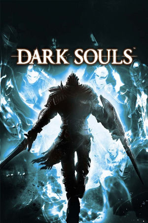

PlayStation 3, Xbox 360, Windows, PlayStation 4, Xbox One, Nintendo Switch
Originally released on September 22nd, 2011 for PlayStation 3 and Xbox 360, Dark Souls is an action role-playing game developed by FromSoftware. Players create a custom undead warrior, the Chosen Undead, and traverse the decaying, mythic kingdom of Lordran, an intricately designed world connected by bonfires and hidden shortcuts. Combat is deliberate and punishing, placing stamina management, spacing, and pattern recognition above twitch reflexes. Defeat strips players of their accumulated souls and humanity, giving them a single opportunity to retrieve their bloodstain. The narrative unfolds cryptically through environmental cues, NPC dialogue, and item descriptions rather than traditional exposition.
Building on the foundation of 2009's Demon's Souls, Dark Souls achieved massive critical acclaim and commercial success, fundamentally reshaping modern action RPGs and spawning the "Soulslike" subgenre. Following an online fan petition signed by nearly 100,000 players, FromSoftware ported the title to Windows in August 2012 as the Dark Souls: Prepare to Die Edition. They subsequently released DLC on consoles titled Artorias of the Abyss. Originally cut content, this DLC introduced the ancient realm of Oolacile, legendary encounters with Knight Artorias, Manus, and Black Dragon Kalameet. It also introduced the Battle of Stoicism, a unique PvP arena. The PC release suffered from horrible technical issues but thankfully, a dedicated fan devloped a patch called DSfix that brought the game to a playable state.
In May 2018, FromSoftware and Bandai Namco released Dark Souls: Remastered for PlayStation 4, Xbox One, and PC, with a Nintendo Switch version arriving in October 2018. The remaster addressed long-standing technical hurdles of the original releases, most notably stabilizing frame rates in notorious areas like Blighttown, while offering native 60 frames per second and up to 4K resolution on supported platforms (with the Switch running at a portable 30 FPS). Beyond visual and lighting updates, the remaster integrated the Artorias of the Abyss expansion out of the box, moved multiplayer onto dedicated matchmaking servers, expanded lobby sizes up to six players, and added quality-of-life improvements such as password matchmaking and usable item stacking. However, the original PC release is no longer for sale on Steam, effectively being replaced by this remaster.
FromSoftware
- Official developer website.
Dark Souls Wiki
- Contains lots of useful information about Dark Souls games.
Dark Souls Fextralife Wiki
- Another wiki that contains lots of useful information about Dark Souls games.
Dark Souls Remastered Manual (JP, PS4)
- Online manual for the PS4 version in Japanese.
Dark Souls Remastered Manual (JP, Xbox One)
- Online manual for the Xbox One version in Japanese.
Dark Souls Remastered Manual (JP, Windows)
- Online manual for the Windows version in Japanese.
Dark Souls Remastered Manual (JP, Nintendo Switch)
- Online manual for the Nintendo Switch version in Japanese.
Steam Grid DB (DS)
- Contains lots of cool options for artwork that can be used in your Steam library.